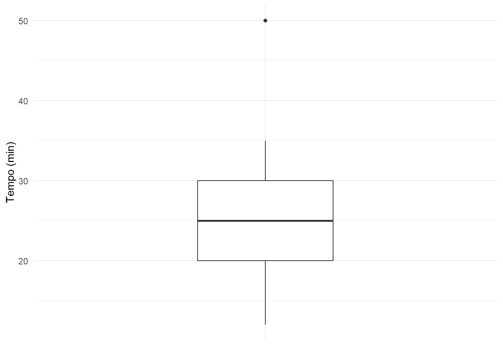
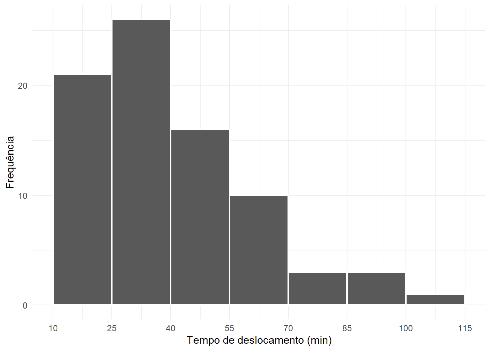

Código
x <- c(
12, 18, 20, 22, 25, 28, 30, 35, 50
)
x[1] 12 18 20 22 25 28 30 35 50No capítulo anterior, estudamos medidas de tendência central e vimos que média, mediana e moda procuram representar o centro de uma distribuição. Agora ampliaremos essa ideia. Em vez de perguntar apenas onde está o centro, queremos saber também como as observações se posicionam ao longo da distribuição.
As medidas de posição permitem localizar valores que dividem um conjunto ordenado de dados em determinadas proporções. Entre elas estão os quartis, decis e percentis. A partir dos quartis, construiremos o resumo de cinco números, a amplitude interquartílica e o boxplot, uma representação gráfica compacta que permite examinar posição, dispersão, assimetria e observações potencialmente atípicas.
Ao final deste capítulo, você deverá ser capaz de calcular e interpretar medidas de posição, obter o resumo de cinco números, construir e interpretar boxplots e investigar valores extremos sem confundir automaticamente uma observação atípica com um erro.
Uma medida de posição indica a localização de um valor em relação às demais observações de um conjunto ordenado.
Considere uma amostra com \(n\) observações. Depois de colocá-las em ordem crescente, escrevemos
\[x_{(1)} \leq x_{(2)} \leq \cdots \leq x_{(n)},\]
em que \(x_{(1)}\) representa o menor valor observado e \(x_{(n)}\) representa o maior.
As medidas de posição são particularmente úteis para responder perguntas como:
Essas perguntas conduzem ao conceito de quantil.
Para uma proporção \(p\), com \(0 \leq p \leq 1\), o quantil de ordem \(p\), representado por \(q_p\), é um valor que localiza aproximadamente a proporção \(p\) das observações na parte inferior da distribuição.
Por exemplo:
O quantil de ordem \(0,50\) corresponde à mediana.
Quando trabalhamos com um conjunto finito de dados, nem sempre existe uma observação exatamente na posição correspondente à proporção desejada. Por isso, existem diferentes convenções para o cálculo de quantis. Alguns métodos selecionam observações do conjunto; outros realizam interpolação entre valores vizinhos.
Consequentemente, dois programas ou duas fórmulas podem produzir resultados ligeiramente diferentes para determinados conjuntos de dados, mesmo que ambos estejam corretos segundo suas respectivas definições.
Para acompanhar os exemplos, considere os nove tempos, em minutos, apresentados em ordem crescente:
\[12,\ 18,\ 20,\ 22,\ 25,\ 28,\ 30,\ 35,\ 50.\]
A Tabela 6.1 apresenta alguns quantis calculados por interpolação linear, conforme a convenção padrão utilizada pela função quantile() do R.
| Quantil | Proporção | Valor (min) | Interpretação aproximada |
|---|---|---|---|
| \(q_{0,10}\) | 10% | 16,8 | cerca de 10% dos valores estão até essa região |
| \(q_{0,25}\) | 25% | 20,0 | cerca de 25% dos valores estão até essa região |
| \(q_{0,50}\) | 50% | 25,0 | metade dos valores está até essa região |
| \(q_{0,75}\) | 75% | 30,0 | cerca de 75% dos valores estão até essa região |
| \(q_{0,90}\) | 90% | 38,0 | cerca de 90% dos valores estão até essa região |
Observe, na Tabela 6.1, que alguns quantis coincidem com valores observados, enquanto outros, como 16,8 e 38,0, não aparecem no conjunto original. Isso ocorre porque o procedimento adotado interpola valores quando a posição desejada se encontra entre duas observações.
A função quantile() utiliza, por padrão, o método denominado type = 7. Para \(0<p<1\), esse método considera
\[h=1+(n-1)p.\]
Se \(h\) não for inteiro, o quantil é obtido por interpolação entre as observações ordenadas vizinhas. Neste capítulo, quando utilizarmos quantile() sem especificar outro método, estaremos adotando essa convenção.
Os quartis dividem a distribuição ordenada em quatro partes.
São definidos três pontos principais:
\[Q_1=q_{0,25},\]
\[Q_2=q_{0,50},\]
e
\[Q_3=q_{0,75}.\]
Assim:
No conjunto do exemplo,
\[Q_1=20,\qquad Q_2=25,\qquad Q_3=30.\]
A Tabela 6.2 resume a interpretação.
| Medida | Valor (min) | Interpretação |
|---|---|---|
| \(Q_1\) | 20 | aproximadamente 25% dos tempos estão até essa região |
| \(Q_2\) | 25 | aproximadamente 50% dos tempos estão até essa região |
| \(Q_3\) | 30 | aproximadamente 75% dos tempos estão até essa região |
A Tabela 6.2 mostra que os quartis não representam quatro grupos de valores, mas sim três pontos de corte que ajudam a dividir a distribuição em quatro partes.
Os decis dividem a distribuição em dez partes. O \(k\)-ésimo decil é dado por
\[D_k=q_{k/10}, \qquad k=1,\ldots,9.\]
Por exemplo,
\[D_1=q_{0,10}, \qquad D_5=q_{0,50}, \qquad D_9=q_{0,90}.\]
Assim, \(D_5\) coincide com a mediana.
Os decis são úteis quando se deseja uma divisão mais detalhada do que aquela proporcionada pelos quartis. O nono decil, por exemplo, pode ser usado para localizar aproximadamente o ponto a partir do qual se encontram os 10% maiores valores.
Os percentis dividem a distribuição em cem partes. O \(k\)-ésimo percentil é
\[P_k=q_{k/100}, \qquad k=1,\ldots,99.\]
Algumas equivalências são particularmente úteis:
\[Q_1=P_{25},\]
\[Q_2=P_{50}=D_5,\]
e
\[Q_3=P_{75}.\]
A Tabela 6.3 organiza essas relações.
| Medida | Quantil correspondente | Percentil correspondente |
|---|---|---|
| Primeiro quartil \(Q_1\) | \(q_{0,25}\) | \(P_{25}\) |
| Segundo quartil \(Q_2\) | \(q_{0,50}\) | \(P_{50}\) |
| Terceiro quartil \(Q_3\) | \(q_{0,75}\) | \(P_{75}\) |
| Quinto decil \(D_5\) | \(q_{0,50}\) | \(P_{50}\) |
| Nono decil \(D_9\) | \(q_{0,90}\) | \(P_{90}\) |
Como mostra a Tabela 6.3, quartis, decis e percentis não são conceitos independentes: todos são casos particulares de quantis.
No R, a função principal para calcular quantis é quantile().
Começaremos com o conjunto utilizado na teoria:
x <- c(
12, 18, 20, 22, 25, 28, 30, 35, 50
)
x[1] 12 18 20 22 25 28 30 35 50Os quartis podem ser obtidos com:
quantile(
x,
probs = c(0.25, 0.50, 0.75)
)25% 50% 75%
20 25 30 Também podemos incluir o mínimo e o máximo:
quantile(
x,
probs = c(0, 0.25, 0.50, 0.75, 1)
) 0% 25% 50% 75% 100%
12 20 25 30 50 Para calcular os decis:
quantile(
x,
probs = seq(0.10, 0.90, by = 0.10)
) 10% 20% 30% 40% 50% 60% 70% 80% 90%
16.8 19.2 20.8 22.6 25.0 27.4 29.2 32.0 38.0 E, por exemplo, para obter os percentis 10, 25, 50, 75 e 90:
quantile(
x,
probs = c(0.10, 0.25, 0.50, 0.75, 0.90)
) 10% 25% 50% 75% 90%
16.8 20.0 25.0 30.0 38.0 Observe que a função recebe as proporções na escala de 0 a 1. Assim, para calcular \(P_{90}\), usamos 0.90, e não 90.
Podemos verificar explicitamente o método padrão:
quantile(
x,
probs = 0.90,
type = 7
)90%
38 Agora aplicaremos o procedimento ao banco dos estudantes. Para o tempo de deslocamento:
quantile(
dados$tempo_deslocamento_min,
probs = c(0.25, 0.50, 0.75),
na.rm = TRUE
) 25% 50% 75%
24.675 36.000 51.775 A tabela a seguir organiza os quartis obtidos.
quartis_tempo <- quantile(
dados$tempo_deslocamento_min,
probs = c(0.25, 0.50, 0.75),
na.rm = TRUE
)
tibble(
medida = c("Q1", "Q2 (mediana)", "Q3"),
probabilidade = c(0.25, 0.50, 0.75),
valor_min = as.numeric(quartis_tempo)
) |>
knitr::kable(
digits = 2,
col.names = c(
"Medida",
"Proporção",
"Tempo (min)"
)
)| Medida | Proporção | Tempo (min) |
|---|---|---|
| Q1 | 0.25 | 24.67 |
| Q2 (mediana) | 0.50 | 36.00 |
| Q3 | 0.75 | 51.78 |
A Tabela 6.4 permite interpretar a posição dos tempos de deslocamento sem examinar individualmente as 80 observações.
Também podemos calcular os decis do tempo de deslocamento:
quantile(
dados$tempo_deslocamento_min,
probs = seq(0.10, 0.90, by = 0.10),
na.rm = TRUE
) 10% 20% 30% 40% 50% 60% 70% 80% 90%
16.93 22.24 27.26 31.52 36.00 40.78 50.23 56.56 68.63 E percentis específicos:
quantile(
dados$tempo_deslocamento_min,
probs = c(0.05, 0.10, 0.90, 0.95),
na.rm = TRUE
) 5% 10% 90% 95%
14.285 16.930 68.630 78.205 Ao interpretar um percentil, sempre traduza o resultado para o contexto. Por exemplo, \(P_{90}\) fornece um valor abaixo do qual se localiza aproximadamente 90% dos tempos de deslocamento.
Uma forma compacta de descrever a posição e a extensão de uma distribuição é o resumo de cinco números.
Ele é formado por:
\[\text{mínimo},\quad Q_1,\quad \text{mediana},\quad Q_3,\quad \text{máximo}.\]
Para o conjunto
\[12,\ 18,\ 20,\ 22,\ 25,\ 28,\ 30,\ 35,\ 50,\]
temos o resumo apresentado na Tabela 6.5.
| Medida | Valor (min) |
|---|---|
| Mínimo | 12 |
| Primeiro quartil (\(Q_1\)) | 20 |
| Mediana (\(Q_2\)) | 25 |
| Terceiro quartil (\(Q_3\)) | 30 |
| Máximo | 50 |
A Tabela 6.5 permite perceber rapidamente que a metade central dos dados se encontra entre 20 e 30 minutos, enquanto o maior valor, 50 minutos, está consideravelmente afastado do terceiro quartil.
O resumo de cinco números utiliza o mínimo e o máximo observados. No boxplot, entretanto, as extremidades dos chamados bigodes podem não coincidir com o mínimo e o máximo quando existem observações identificadas como potencialmente atípicas.
A amplitude interquartílica, abreviada por AIQ, mede a extensão ocupada pela metade central das observações.
Ela é definida por
\[AIQ=Q_3-Q_1.\]
No exemplo,
\[AIQ=30-20=10.\]
Portanto, os 50% centrais dos dados estão distribuídos em uma faixa de 10 minutos.
A amplitude interquartílica é particularmente útil porque depende dos quartis e, por isso, é menos sensível a valores extremos do que medidas baseadas diretamente no mínimo e no máximo.
Dizer que \(AIQ=10\) não significa que todas as observações estejam em um intervalo de 10 unidades. Significa que a distância entre o primeiro e o terceiro quartis é igual a 10, ou seja, a metade central da distribuição ocupa essa amplitude.
O resumo de cinco números pode ser obtido de maneira consistente com os quartis utilizados neste capítulo por meio de quantile():
quantile(
dados$tempo_deslocamento_min,
probs = c(0, 0.25, 0.50, 0.75, 1),
na.rm = TRUE
) 0% 25% 50% 75% 100%
11.700 24.675 36.000 51.775 112.000 A amplitude interquartílica é calculada pela função IQR():
IQR(
dados$tempo_deslocamento_min,
na.rm = TRUE
)[1] 27.1Podemos organizar as cinco medidas em uma tabela.
resumo_cinco <- quantile(
dados$tempo_deslocamento_min,
probs = c(0, 0.25, 0.50, 0.75, 1),
na.rm = TRUE
)
tibble(
medida = c(
"Mínimo",
"Q1",
"Mediana",
"Q3",
"Máximo"
),
tempo_min = as.numeric(resumo_cinco)
) |>
knitr::kable(
digits = 2,
col.names = c(
"Medida",
"Tempo (min)"
)
)| Medida | Tempo (min) |
|---|---|
| Mínimo | 11.70 |
| Q1 | 24.67 |
| Mediana | 36.00 |
| Q3 | 51.78 |
| Máximo | 112.00 |
A Tabela 6.6 mostra que os tempos variam de 11,7 a 112,0 minutos, enquanto a metade central das observações está delimitada aproximadamente pelo primeiro e pelo terceiro quartis.
A função summary() também é útil:
summary(
dados$tempo_deslocamento_min
) Min. 1st Qu. Median Mean 3rd Qu. Max.
11.70 24.68 36.00 40.76 51.77 112.00 Entretanto, observe que summary() não apresenta apenas os cinco números: ela inclui também a média.
Existe ainda a função fivenum():
fivenum(
dados$tempo_deslocamento_min
)[1] 11.70 24.65 36.00 51.85 112.00A função fivenum() utiliza os chamados hinges de Tukey, enquanto quantile() oferece diferentes métodos de cálculo e utiliza type = 7 por padrão. Dependendo do tamanho e da configuração da amostra, os valores de \(Q_1\) e \(Q_3\) podem apresentar pequenas diferenças.
Para manter consistência com os quartis definidos neste capítulo e com os cálculos de IQR(), utilizaremos preferencialmente quantile(..., type = 7).
O boxplot, também chamado de diagrama de caixa, é uma representação gráfica construída a partir dos quartis e da amplitude interquartílica.
Sua estrutura básica contém:
A largura da caixa, no eixo dos valores, corresponde à amplitude interquartílica:
\[AIQ=Q_3-Q_1.\]
Uma regra muito utilizada estabelece os limites
\[LI=Q_1-1,5(AIQ)\]
e
\[LS=Q_3+1,5(AIQ),\]
em que:
Observações menores que \(LI\) ou maiores que \(LS\) são sinalizadas como potencialmente atípicas.
Retomando o exemplo:
\[Q_1=20,\qquad Q_3=30,\qquad AIQ=10.\]
Logo,
\[LI=20-1,5(10)=5\]
e
\[LS=30+1,5(10)=45.\]
O valor 50 ultrapassa o limite superior de 45 e, portanto, será sinalizado pelo boxplot como potencialmente atípico.
A Tabela 6.7 reúne os valores utilizados na construção.
| Elemento | Valor (min) |
|---|---|
| Mínimo observado | 12 |
| \(Q_1\) | 20 |
| Mediana | 25 |
| \(Q_3\) | 30 |
| Máximo observado | 50 |
| AIQ | 10 |
| Limite inferior | 5 |
| Limite superior | 45 |
| Menor valor não atípico | 12 |
| Maior valor não atípico | 35 |
| Valor potencialmente atípico | 50 |
A Tabela 6.7 evidencia uma distinção essencial: embora o limite superior seja 45, o bigode superior termina em 35, pois 35 é a maior observação efetivamente registrada que ainda está dentro do limite.
Os valores \(LI\) e \(LS\) são limites teóricos para classificação. Os bigodes do boxplot se estendem até a menor e a maior observações que permanecem dentro desses limites.
Portanto, não se deve desenhar automaticamente um bigode em \(LI\) e outro em \(LS\).
O boxplot correspondente é apresentado na Figura 6.1.

Na Figura 6.1, a caixa representa os 50% centrais dos dados, a linha interna representa a mediana e o ponto localizado em 50 minutos é destacado por ultrapassar o limite superior calculado.
A posição da mediana dentro da caixa, o tamanho dos segmentos entre os quartis, o comprimento dos bigodes e a presença de pontos isolados fornecem pistas sobre a distribuição.
Entretanto, o boxplot é um resumo. Ele não mostra diretamente todos os detalhes da forma da distribuição, como picos, lacunas ou multimodalidade. Por esse motivo, sua interpretação pode ser enriquecida quando comparada com histogramas, gráficos de densidade ou gráficos de pontos.
Começaremos calculando os quartis e a amplitude interquartílica do tempo de deslocamento.
q1 <- quantile(
dados$tempo_deslocamento_min,
probs = 0.25,
na.rm = TRUE
)
q3 <- quantile(
dados$tempo_deslocamento_min,
probs = 0.75,
na.rm = TRUE
)
aiq <- IQR(
dados$tempo_deslocamento_min,
na.rm = TRUE
)
q1 25%
24.675 q3 75%
51.775 aiq[1] 27.1Agora calculamos os limites inferior e superior:
limite_inferior <- q1 - 1.5 * aiq
limite_superior <- q3 + 1.5 * aiq
limite_inferior 25%
-15.975 limite_superior 75%
92.425 Podemos identificar as observações que ultrapassam esses limites:
atipicos_tempo <- dados |>
filter(
tempo_deslocamento_min < limite_inferior |
tempo_deslocamento_min > limite_superior
) |>
select(
id_estudante,
curso,
meio_transporte,
satisfacao,
idade_anos,
faltas,
tempo_deslocamento_min
) |>
arrange(tempo_deslocamento_min)
atipicos_tempo |>
knitr::kable(
digits = 1,
col.names = c(
"Estudante",
"Curso",
"Transporte",
"Satisfação",
"Idade",
"Faltas",
"Tempo (min)"
)
)| Estudante | Curso | Transporte | Satisfação | Idade | Faltas | Tempo (min) |
|---|---|---|---|---|---|---|
| E001 | Química | Ônibus | Alta | 25 | 1 | 96.5 |
| E054 | Matemática | Ônibus | Alta | 30 | 3 | 99.2 |
| E005 | Física | Ônibus | Alta | 19 | 5 | 112.0 |
A Tabela 6.8 mostra quais observações merecem investigação segundo a regra adotada. A presença nessa tabela, entretanto, não autoriza sua exclusão automática.
O boxplot pode ser construído diretamente com geom_boxplot().
dados |>
ggplot(
aes(x = "", y = tempo_deslocamento_min)
) +
geom_boxplot(width = 0.35) +
labs(
x = NULL,
y = "Tempo de deslocamento (min)"
) +
theme_minimal()
Na Figura 6.2, os pontos localizados além do bigode superior correspondem a tempos que ultrapassam o limite determinado pela regra de \(1,5\times AIQ\).
O boxplot resume uma distribuição utilizando poucos elementos. Isso o torna compacto e especialmente útil para comparar distribuições. Entretanto, justamente por resumir os dados, ele não revela todos os detalhes da forma.
O histograma apresenta como as observações se distribuem ao longo de intervalos e permite visualizar concentrações, caudas, possíveis lacunas e outras características da forma.
A Tabela 6.9 resume as principais diferenças.
| Aspecto | Boxplot | Histograma |
|---|---|---|
| Centro | mostra explicitamente a mediana | pode sugerir a região de maior concentração |
| Quartis | mostra \(Q_1\) e \(Q_3\) | não os mostra diretamente |
| AIQ | representada pela caixa | não aparece diretamente |
| Valores potencialmente atípicos | podem ser destacados individualmente | aparecem nas classes das extremidades |
| Forma da distribuição | visão bastante resumida | mostra mais detalhes da forma |
| Comparação entre grupos | muito conveniente | pode exigir vários gráficos |
Como mostra a Tabela 6.9, as duas representações cumprem funções diferentes. Não é necessário escolher uma delas como universalmente melhor.
Já construímos o boxplot do tempo de deslocamento na Figura 6.2. Agora construiremos um histograma para a mesma variável.
dados |>
ggplot(
aes(x = tempo_deslocamento_min)
) +
geom_histogram(
binwidth = 15,
boundary = 10,
closed = "left",
color = "white",
linewidth = 0.8
) +
scale_x_continuous(
breaks = seq(10, 115, by = 15)
) +
labs(
x = "Tempo de deslocamento (min)",
y = "Frequência"
) +
theme_minimal()
Ao comparar a Figura 6.2 com a Figura 6.3, observe que o boxplot facilita a localização da mediana, dos quartis e das observações sinalizadas como potencialmente atípicas. O histograma, por sua vez, mostra com mais clareza onde os tempos se concentram e como a frequência diminui à medida que os tempos aumentam.
Uma análise exploratória pode utilizar as duas representações de forma complementar.
Uma observação marcada pelo boxplot não deve ser chamada automaticamente de erro.
O termo observação potencialmente atípica indica apenas que aquele valor está relativamente distante da região central da distribuição segundo uma regra estatística específica.
Essa sinalização deve ser entendida como um convite à investigação.
A Tabela 6.10 apresenta algumas possibilidades.
| Situação | Exemplo | Conduta inicial |
|---|---|---|
| Erro de digitação | altura registrada como 17,5 m em vez de 1,75 m | conferir a fonte e corrigir se houver evidência |
| Erro de medição | equipamento apresentou falha conhecida | verificar registros e protocolo de coleta |
| Valor extremo legítimo | estudante realmente leva 112 min para chegar à universidade | manter e interpretar |
| Subgrupo distinto | estudantes de uma região distante apresentam tempos maiores | investigar a estrutura dos grupos |
| Unidade inconsistente | parte dos tempos foi registrada em horas e parte em minutos | padronizar após confirmação |
| Valor raro sem explicação imediata | observação muito distante das demais | investigar antes de decidir |
A Tabela 6.10 reforça que um valor extremo pode conter informação relevante sobre a população estudada. Excluir observações somente porque aparecem como pontos separados em um boxplot pode produzir uma análise incorreta.
A regra de \(1,5\times AIQ\) é uma regra de sinalização, não uma regra automática de exclusão. Para decidir sobre uma observação é necessário considerar a origem do dado, o processo de coleta, a plausibilidade contextual e os objetivos da análise.
Ao encontrar uma observação potencialmente atípica, é recomendável:
Já identificamos os estudantes sinalizados pela regra da amplitude interquartílica. Agora vamos examinar suas informações completas.
dados |>
filter(
tempo_deslocamento_min < limite_inferior |
tempo_deslocamento_min > limite_superior
) |>
arrange(tempo_deslocamento_min) |>
knitr::kable(
digits = 2,
col.names = c(
"Estudante",
"Curso",
"Transporte",
"Satisfação",
"Idade",
"Faltas",
"Tempo (min)",
"Altura (m)"
)
)| Estudante | Curso | Transporte | Satisfação | Idade | Faltas | Tempo (min) | Altura (m) |
|---|---|---|---|---|---|---|---|
| E001 | Química | Ônibus | Alta | 25 | 1 | 96.5 | 1.75 |
| E054 | Matemática | Ônibus | Alta | 30 | 3 | 99.2 | 1.65 |
| E005 | Física | Ônibus | Alta | 19 | 5 | 112.0 | 1.61 |
A Tabela 6.11 permite analisar as observações em seu contexto. No banco utilizado nesta apostila, o fato de alguns tempos serem elevados não é, por si só, evidência de erro de registro.
Podemos também obter o maior valor que ainda permanece dentro do limite superior:
maior_valor_nao_atipico <- dados |>
filter(
tempo_deslocamento_min <= limite_superior
) |>
summarise(
valor =
max(tempo_deslocamento_min, na.rm = TRUE)
) |>
pull(valor)
maior_valor_nao_atipico[1] 85.9Esse valor corresponde à posição do bigode superior do boxplot, e não ao próprio limite superior calculado.
Para localizar os identificadores dos maiores tempos, podemos ordenar o banco:
dados |>
arrange(desc(tempo_deslocamento_min)) |>
select(
id_estudante,
tempo_deslocamento_min,
meio_transporte,
curso
) |>
slice_head(n = 10) |>
knitr::kable(
digits = 1,
col.names = c(
"Estudante",
"Tempo (min)",
"Transporte",
"Curso"
)
)| Estudante | Tempo (min) | Transporte | Curso |
|---|---|---|---|
| E005 | 112.0 | Ônibus | Física |
| E054 | 99.2 | Ônibus | Matemática |
| E001 | 96.5 | Ônibus | Química |
| E045 | 85.9 | Ônibus | Estatística |
| E071 | 77.8 | Ônibus | Física |
| E038 | 76.3 | Ônibus | Química |
| E022 | 72.7 | Ônibus | Estatística |
| E031 | 68.9 | Ônibus | Estatística |
| E072 | 68.6 | Ônibus | Física |
| E041 | 68.5 | Ônibus | Matemática |
A Tabela 6.12 facilita a inspeção dos registros localizados na extremidade superior da distribuição. Esse tipo de verificação é fundamental antes de qualquer decisão sobre os dados.
Calcular uma medida de posição é apenas a primeira etapa. O resultado precisa ser traduzido para a variável estudada.
Se, por exemplo, o primeiro quartil do tempo de deslocamento for aproximadamente 24,7 minutos, uma interpretação adequada é:
aproximadamente 25% dos estudantes apresentam tempos de deslocamento até a região de 24,7 minutos.
Da mesma forma, se o terceiro quartil for aproximadamente 51,8 minutos:
aproximadamente 75% dos estudantes apresentam tempos de deslocamento até a região de 51,8 minutos, enquanto aproximadamente 25% apresentam tempos superiores a esse ponto.
Não devemos dizer que “25% dos estudantes possuem exatamente 24,7 minutos de deslocamento”. O quartil é um ponto de posição, e não a frequência de um valor específico.
Em amostras finitas, especialmente quando há valores repetidos ou interpolação, expressões como aproximadamente 25% e aproximadamente 75% são mais adequadas do que tratar os quartis como divisões perfeitas em todos os conjuntos de dados.
A Tabela 6.13 resume as funções trabalhadas neste capítulo.
| Função | Finalidade principal |
|---|---|
quantile() |
calcular quantis, quartis, decis e percentis |
median() |
calcular a mediana |
min() |
obter o menor valor |
max() |
obter o maior valor |
IQR() |
calcular a amplitude interquartílica |
summary() |
obter um resumo numérico que inclui quartis e média |
fivenum() |
obter o resumo de cinco números segundo os hinges de Tukey |
geom_boxplot() |
construir boxplots com ggplot2 |
geom_histogram() |
construir histogramas para comparação da forma |
A Tabela 6.13 deve ser entendida como uma referência de consulta. O objetivo não é memorizar uma lista de funções, mas saber qual pergunta estatística cada uma ajuda a responder.
Neste capítulo, ampliamos a descrição de uma variável quantitativa para além das medidas de tendência central.
Os principais pontos são:
Ideia-chave: medidas de posição e boxplots não servem apenas para calcular pontos de corte. Eles ajudam a compreender onde as observações se localizam, como a metade central dos dados se distribui e quais valores merecem investigação mais cuidadosa.
Explique, com suas palavras, o que significa um quantil de ordem \(p\).
Qual é a relação entre:
Considere os dados ordenados
\[5,\ 7,\ 8,\ 10,\ 11,\ 13,\ 15,\ 18,\ 20.\]
Determine, utilizando a mesma convenção adotada nos exemplos:
Utilizando os resultados do exercício anterior, calcule:
Considere agora o conjunto
\[5,\ 7,\ 8,\ 10,\ 11,\ 13,\ 15,\ 18,\ 50.\]
Recalcule \(Q_1\), \(Q_3\), AIQ e os limites. O valor 50 é sinalizado? Justifique.
Explique por que o limite superior de um boxplot não deve ser confundido com a posição do bigode superior.
Um estudante afirmou: “Se um valor aparece como ponto isolado no boxplot, ele deve ser retirado do banco.” Explique por que essa afirmação é inadequada.
Em uma prova, \(P_{90}=8,7\). Interprete esse resultado no contexto das notas dos estudantes.
Uma variável apresenta \(Q_1=18\), mediana igual a 25 e \(Q_3=41\). Interprete:
Dois conjuntos de dados possuem o mesmo resumo de cinco números. Isso garante que tenham exatamente a mesma distribuição? Explique.
Compare o boxplot e o histograma. Cite pelo menos duas informações que são particularmente fáceis de observar em cada representação.
Por que diferentes programas estatísticos podem apresentar pequenas diferenças nos valores dos quartis de uma mesma amostra?
Em que situação o máximo do resumo de cinco números não coincide com a extremidade do bigode superior de um boxplot?
Explique a diferença entre:
Utilize o banco dados com os 80 estudantes.
Para a variável idade_anos:
Calcule os nove decis da variável tempo_deslocamento_min. Interprete \(D_1\), \(D_5\) e \(D_9\).
Calcule \(P_5\), \(P_{10}\), \(P_{25}\), \(P_{75}\), \(P_{90}\) e \(P_{95}\) para altura_m. Organize os resultados em uma tabela com título e referência no texto.
Construa um boxplot para idade_anos.
label iniciado por fig-;fig-cap;Construa um boxplot para altura_m. Calcule manualmente no R, antes do gráfico:
Para tempo_deslocamento_min, reproduza a identificação das observações potencialmente atípicas sem copiar o código do capítulo. Organize os registros encontrados em uma tabela numerada e escreva uma interpretação.
Construa, para idade_anos:
Utilize quantile() para calcular os quartis de tempo_deslocamento_min com type = 7. Depois, utilize fivenum().
Escolha uma das variáveis quantitativas do banco e investigue todos os pontos sinalizados pelo boxplot.
Crie uma tabela contendo, para idade_anos, faltas, tempo_deslocamento_min e altura_m:
label e ser referenciada em um parágrafo interpretativo.Calcule \(P_{90}\) do tempo de deslocamento e utilize-o para responder: aproximadamente a partir de qual tempo se encontram os 10% maiores deslocamentos?
Escolha uma variável quantitativa e produza um pequeno relatório exploratório contendo: